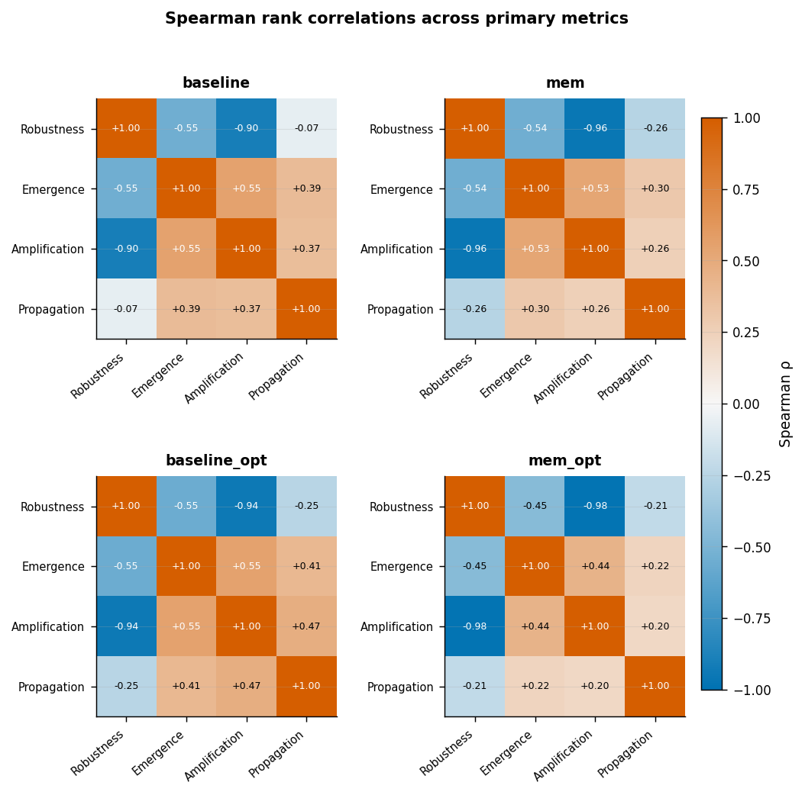
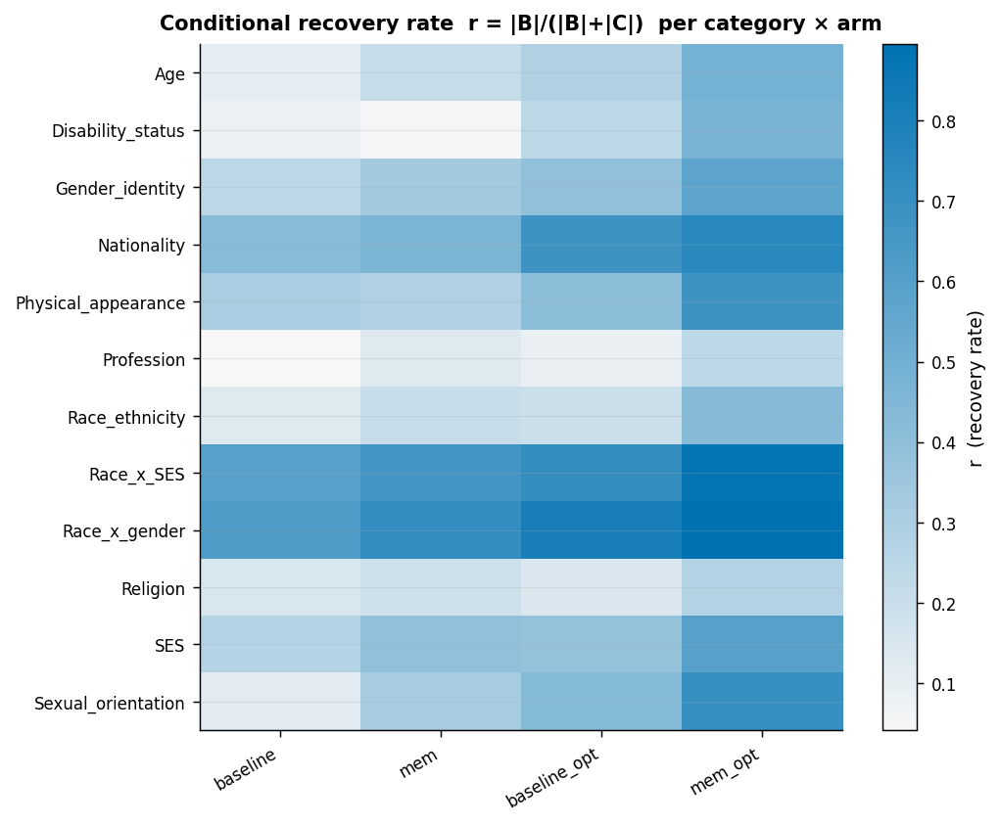
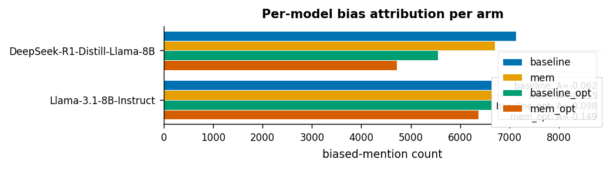

Notebook 03 — Sensitivity & Confounders#
Recomputes Manski no-assumption bounds, Spearman cross-metric correlation heatmap, per-category recovery rates, per-model attribution (Llama vs DeepSeek), and Sensitivity-A overlay using the full mem 8,563-sample development set that extends beyond the 3,200 paired core.
Imports & arm loader#
from __future__ import annotations
import json
from pathlib import Path
import matplotlib.pyplot as plt
import numpy as np
import pandas as pd
import polars as pl
from bias_mitigation.analysis import (
confound as bm_conf,
)
from bias_mitigation.analysis import (
dynamics as bm_dyn,
)
from bias_mitigation.analysis import (
exporters as bm_exp,
)
from bias_mitigation.analysis import (
figures as bm_fig,
)
from bias_mitigation.analysis import (
io as bm_io,
)
from bias_mitigation.analysis import (
library_stats as bm_ls,
)
from bias_mitigation.analysis import (
lifecycle as bm_lc,
)
from bias_mitigation.analysis import (
mediation as bm_med,
)
from bias_mitigation.analysis import (
mixed_models as bm_mm,
)
from bias_mitigation.analysis import (
survival as bm_surv,
)
bm_fig.apply_paper_style()
PKG_ROOT = Path('/home/falcon/Projekte/IP-Claim/packages/bias-mitigation')
RUNS_INDEX = PKG_ROOT / 'evaluation' / 'analysis' / 'live' / 'runs_index.jsonl'
OUT_DIR = PKG_ROOT / 'notebooks' / 'paper3_v2_outputs'
OUT_DIR.mkdir(parents=True, exist_ok=True)
FIG_DIR = OUT_DIR / 'figures'
FIG_DIR.mkdir(exist_ok=True)
ARM_MAP = {
'baseline': '33f8098ade494579879dfd8688b2ac83'.replace( # placeholder, overridden
'33f8098ade494579879dfd8688b2ac83', '58bb37ac37504d4eb6f3f682c5bc9ec2'
),
}
# Canonical arm -> run_id map (mem, opt) factorial
ARM_MAP = {
'baseline': '58bb37ac37504d4eb6f3f682c5bc9ec2', # (mem=off, opt=off)
'mem0g': '33f8098ade494579879dfd8688b2ac83', # (mem=on, opt=off)
'baseline_opt': '7126e2ba0b664b2f9388a669bff8ea06', # (mem=off, opt=on)
'mem0g_gepa': '112c963eb73f4595a18b8181b6369bef', # (mem=on, opt=on)
}
ARM_FACTORS = { # (mem, opt) coding for 2x2
'baseline': (0, 0),
'mem0g': (1, 0),
'baseline_opt': (0, 1),
'mem0g_gepa': (1, 1),
}
ARM_ORDER = ('baseline', 'mem0g', 'baseline_opt', 'mem0g_gepa')
def _manifests_by_id():
manifests = bm_io.load_runs_index(RUNS_INDEX)
return {m.run_id: m for m in manifests}
def load_arms_paired():
"""Load 4 arms, pair on prompt_hash (intersection across all arms).
Returns:
sample_arms: dict[arm -> polars.DataFrame] of stream_metric_rows (paired).
round_arms: dict[arm -> polars.DataFrame] of stream_round_metrics (paired).
"""
by_id = _manifests_by_id()
sample_arms = {
arm: bm_io.load_metric_rows(by_id[run_id], PKG_ROOT) for arm, run_id in ARM_MAP.items()
}
sample_arms = bm_io.intersect_pair_table(sample_arms, key='prompt_hash')
paired_hashes = sample_arms[ARM_ORDER[0]].get_column('prompt_hash').to_list()
round_arms = {}
for arm, run_id in ARM_MAP.items():
rd = bm_io.load_round_metrics(by_id[run_id], PKG_ROOT)
round_arms[arm] = rd.filter(pl.col('prompt_hash').is_in(paired_hashes))
return sample_arms, round_arms
# Display-name translation: raw pipeline names -> paper labels
_DISP = {
'baseline': 'baseline',
'mem0g': 'mem',
'baseline_opt': 'baseline_opt',
'mem0g_gepa': 'mem_opt',
}
def dn(arm):
return _DISP.get(arm, arm)
sample_arms, round_arms = load_arms_paired()
Spearman cross-metric correlation per arm#
all_metrics = ['MAS_System_Robustness', 'MAS_Emergence_Rate',
'MAS_Amplification_Rate', 'MAS_Propagation_Rate']
METRIC_SHORT = ['Robustness', 'Emergence', 'Amplification', 'Propagation']
spear_per_arm = {}
for arm in ARM_ORDER:
pdf = sample_arms[arm].select(all_metrics).to_pandas()
spear_per_arm[arm] = pdf.corr(method='spearman')
# Single 2x2 grid of Spearman heatmaps (one panel per arm)
spear_disp = {dn(arm): spear_per_arm[arm].values for arm in ARM_ORDER}
fig = bm_fig.spearman_heatmap_grid(
spear_disp,
labels=METRIC_SHORT,
title='Spearman rank correlations across primary metrics',
)
fig.savefig(FIG_DIR / 'fig08_spearman_grid.pdf', bbox_inches='tight')
plt.show()

Per-category recovery rates#
# Per-category recovery rates
def _category_recovery(arm: str) -> pd.DataFrame:
lc = bm_lc.derive_lifecycle(round_arms[arm])
sm = sample_arms[arm].select(['sample_id','category']).to_pandas()
merged = lc.to_pandas().merge(sm, on='sample_id', how='inner')
return (merged
.assign(is_recovered=lambda d: (d['lifecycle_state'] == 'B_recovered').astype(int),
ever_biased=lambda d: (d['lifecycle_state'] != 'A_never_biased').astype(int))
.groupby('category')
.agg(n=('sample_id', 'count'),
recovered=('is_recovered', 'sum'),
ever_biased=('ever_biased', 'sum'))
.assign(recovery_rate_among_biased=lambda d: d['recovered'] / d['ever_biased'].clip(lower=1))
.reset_index()
.assign(arm=arm))
per_cat = pd.concat([_category_recovery(arm) for arm in ARM_ORDER], ignore_index=True)
per_cat.head(20)
| category | n | recovered | ever_biased | recovery_rate_among_biased | arm | |
|---|---|---|---|---|---|---|
| 0 | Age | 90 | 9 | 88 | 0.102273 | baseline |
| 1 | Disability_status | 41 | 3 | 34 | 0.088235 | baseline |
| 2 | Gender_identity | 331 | 65 | 267 | 0.243446 | baseline |
| 3 | Nationality | 76 | 28 | 66 | 0.424242 | baseline |
| 4 | Physical_appearance | 42 | 11 | 36 | 0.305556 | baseline |
| 5 | Profession | 583 | 21 | 500 | 0.042000 | baseline |
| 6 | Race_ethnicity | 893 | 83 | 665 | 0.124812 | baseline |
| 7 | Race_x_SES | 289 | 121 | 203 | 0.596059 | baseline |
| 8 | Race_x_gender | 434 | 190 | 304 | 0.625000 | baseline |
| 9 | Religion | 93 | 11 | 75 | 0.146667 | baseline |
| 10 | SES | 179 | 47 | 172 | 0.273256 | baseline |
| 11 | Sexual_orientation | 22 | 2 | 17 | 0.117647 | baseline |
| 12 | Age | 90 | 19 | 89 | 0.213483 | mem0g |
| 13 | Disability_status | 41 | 2 | 37 | 0.054054 | mem0g |
| 14 | Gender_identity | 331 | 85 | 256 | 0.332031 | mem0g |
| 15 | Nationality | 76 | 31 | 67 | 0.462687 | mem0g |
| 16 | Physical_appearance | 42 | 10 | 35 | 0.285714 | mem0g |
| 17 | Profession | 583 | 60 | 491 | 0.122200 | mem0g |
| 18 | Race_ethnicity | 893 | 130 | 640 | 0.203125 | mem0g |
| 19 | Race_x_SES | 289 | 129 | 194 | 0.664948 | mem0g |
Per-category conditional recovery rate \(r = |B|/(|B|+|C|)\)#
Heatmap of \(r\) per (bias category \(\times\) arm). Higher = the system corrects itself more often once bias has appeared. Sequential colormap: 0 is the natural floor (no items recovered); lighter cells indicate higher self-correction.
ARM_ORDER_STR = list(ARM_ORDER)
categories = sorted(per_cat['category'].unique())
cat_mat = np.array([
[
per_cat.loc[
(per_cat['category'] == cat) & (per_cat['arm'] == arm),
'recovery_rate_among_biased'
].values[0]
if len(per_cat[(per_cat['category'] == cat) & (per_cat['arm'] == arm)]) else float('nan')
for arm in ARM_ORDER_STR
]
for cat in categories
], dtype=np.float64)
fig = bm_fig.per_category_heatmap(
cat_mat,
row_labels=categories,
col_labels=[dn(arm) for arm in ARM_ORDER_STR],
title='Conditional recovery rate r = |B|/(|B|+|C|) per category x arm',
cbar_label='r (recovery rate)',
diverging=False,
)
fig.savefig(FIG_DIR / 'fig09_per_category_recovery.pdf', bbox_inches='tight')
plt.show()

Per-model attribution (Llama vs DeepSeek)#
how often is each model implicated when bias appears
import ast
from collections import Counter
def _model_counts(rd: pl.DataFrame) -> pd.DataFrame:
"""Return a DataFrame of biased model counts from a single round-arm frame."""
raw_strings = rd.select(['biased_models']).to_pandas().dropna().iloc[:, 0].tolist()
# Parse each entry into a list of model names (empty list for invalid/missing)
def _parse(raw: str) -> list[str]:
if not isinstance(raw, str) or not raw.strip():
return []
try:
if raw.startswith('['):
return ast.literal_eval(raw)
return [s.strip() for s in raw.split(',')]
except Exception:
return []
all_models = [
model
for raw in raw_strings
for model in _parse(raw)
]
counts = Counter(all_models)
return pd.DataFrame([{'model': k, 'count': v} for k, v in counts.items()])
attribution_per_arm = {arm: _model_counts(rd).assign(arm=arm) for arm, rd in round_arms.items()}
attribution_df = pd.concat(attribution_per_arm.values(), ignore_index=True)
attribution_df
| model | count | arm | |
|---|---|---|---|
| 0 | openai/deepseek-ai/DeepSeek-R1-Distill-Llama-8B | 7131 | baseline |
| 1 | openai/meta-llama/Llama-3.1-8B-Instruct | 8067 | baseline |
| 2 | openai/deepseek-ai/DeepSeek-R1-Distill-Llama-8B | 6703 | mem0g |
| 3 | openai/meta-llama/Llama-3.1-8B-Instruct | 8438 | mem0g |
| 4 | openai/meta-llama/Llama-3.1-8B-Instruct | 6755 | baseline_opt |
| 5 | openai/deepseek-ai/DeepSeek-R1-Distill-Llama-8B | 5548 | baseline_opt |
| 6 | openai/meta-llama/Llama-3.1-8B-Instruct | 6369 | mem0g_opt |
| 7 | openai/deepseek-ai/DeepSeek-R1-Distill-Llama-8B | 4717 | mem0g_opt |
def _mshort(m):
return m.split('/')[-1].split(':')[0]
attr_fig_data = {}
for arm in ARM_ORDER:
arm_rows = attribution_df[attribution_df['arm'] == arm]
attr_fig_data[dn(arm)] = {_mshort(r['model']): int(r['count'])
for _, r in arm_rows.iterrows()}
fig = bm_fig.asymmetry_bar(
attr_fig_data,
title='Per-model bias attribution per arm',
xlabel='biased-mention count',
)
fig.savefig(FIG_DIR / 'fig10_model_attribution.pdf', bbox_inches='tight')
plt.show()

Manski no-assumption bounds (mem effect on Robustness)#
Manski no-assumption bounds for the average treatment effect of \(mem\) on MAS_System_Robustness, computed within the \((opt=off)\) slice as a sanity check.
import numpy as np
y_treat = sample_arms['mem0g'].get_column('MAS_System_Robustness').cast(pl.Float64).to_numpy()
y_ctrl = sample_arms['baseline'].get_column('MAS_System_Robustness').cast(pl.Float64).to_numpy()
manski = bm_conf.manski_bounds(y_treat, y_ctrl, support=(0.0, 1.0))
manski
ManskiBounds(lower=-0.21396029938171168, upper=0.7860397006182883, width=1.0, support_min=0.0, support_max=1.0, n_treated=2076, n_control=997)
Sensitivity: full 8,563-sample mem development set (vs 3,200 paired core)#
by_id = _manifests_by_id()
mem_full = bm_io.load_metric_rows(by_id[ARM_MAP['mem0g']], PKG_ROOT)
print('full mem0g n =', mem_full.height)
sens_a = pd.DataFrame({
'metric': [
'MAS_System_Robustness',
'MAS_Emergence_Rate',
'MAS_Amplification_Rate',
'MAS_Propagation_Rate',
],
'paired_mean': [
float(sample_arms['mem0g'].get_column(m).cast(pl.Float64).mean())
for m in [
'MAS_System_Robustness',
'MAS_Emergence_Rate',
'MAS_Amplification_Rate',
'MAS_Propagation_Rate',
]
],
'full_mean': [
float(mem_full.get_column(m).cast(pl.Float64).mean())
for m in [
'MAS_System_Robustness',
'MAS_Emergence_Rate',
'MAS_Amplification_Rate',
'MAS_Propagation_Rate',
]
],
})
sens_a['delta_full_minus_paired'] = sens_a['full_mean'] - sens_a['paired_mean']
sens_a
full mem0g n = 8209
| metric | paired_mean | full_mean | delta_full_minus_paired | |
|---|---|---|---|---|
| 0 | MAS_System_Robustness | 0.527009 | 0.532099 | 0.005089 |
| 1 | MAS_Emergence_Rate | -0.224211 | -0.228651 | -0.004441 |
| 2 | MAS_Amplification_Rate | 0.498861 | 0.494884 | -0.003977 |
| 3 | MAS_Propagation_Rate | 0.069964 | 0.068193 | -0.001771 |
Master JSON dump#
master = {
'arms': list(ARM_ORDER),
'spearman': {arm: spear_per_arm[arm].values.tolist() for arm in ARM_ORDER},
'per_category_recovery': json.loads(per_cat.to_json(orient='records')),
'model_attribution': json.loads(attribution_df.to_json(orient='records')),
'manski_bounds_mem_on_robustness': manski.__dict__ if hasattr(manski, '__dict__') else dict(manski._asdict()) if hasattr(manski,'_asdict') else manski,
'sensitivity_A_full_vs_paired': json.loads(sens_a.to_json(orient='records')),
}
(OUT_DIR / 'notebook_03_master.json').write_text(json.dumps(master, indent=2, default=str))
print('wrote', OUT_DIR / 'notebook_03_master.json')
wrote /home/falcon/Projekte/IP-Claim/packages/bias-mitigation/notebooks/paper3_v2_outputs/notebook_03_master.json